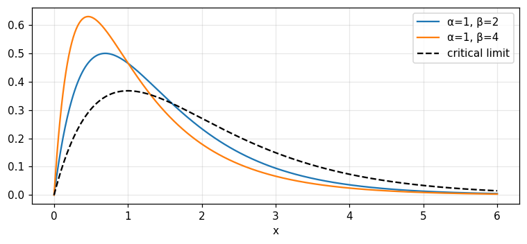
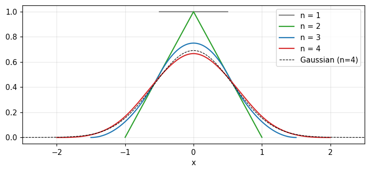
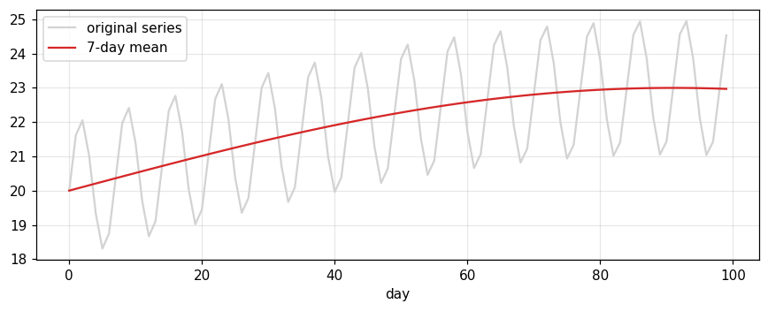

Convolution is the common operation of every linear invariant system; this chapter teaches how to picture it, compute it by hand and by machine, and its relatives: autocorrelation, cross correlation and the energy spectrum.
Following Volterra, h is a functional of f. To calculate h(x_1) we need f over a whole range of x, whereas a function of the function f at x=x_1 needs only f(x_1) (p. 25). That is why convolution describes the "memory" of a system.
1/5 · Definition and pictures of convolution
View 1: the area of the product f(u)g(x-u)
In Fig. 3.1 the product f(u)g(x-u) is shaded and the ordinate h(x) equals the shaded area (p. 25). Numerical example: f=\Pi and g=e^{-u}H(u); at x=1 the overlap area is e^{-1/2}-e^{-3/2} = 0.3834 (numerical integral and closed form agree).
1/5 · Definition and pictures of convolution
View 2: smoothing
Compared with f, the function h=f*g is smoother in detail, more spread out and has less total variation (Fig. 3.2, p. 25). Example: a \pm1 series that flips sign constantly has total variation 48; after a 5-point running mean it has 11.6.
1/5 · Definition and pictures of convolution
Views 3 and 4: superposition and folding
View 3: resolve f into infinitesimal columns, each "melted out" into a heap shaped like g centred at the column, and h(x) is the sum of contributions at x (Fig. 3.3). View 4: fold g(u) about the line u=x/2; the area under the product is h(x) (Fig. 3.4) (pp. 25 to 26).
Because g is reversed before multiplying, convolution is commutative. It is also associative (when the integrals exist) and distributive over addition, so the asterisks behave like multiplication signs in formal manipulation (pp. 26 to 27). The notebook checks all three on random sequences: 3 of 3 hold.
Physical meaning: every observation is a convolution
Convolution describes the action of an observing instrument when it takes a weighted mean of some physical quantity over a narrow range of a variable. When the weighting function does not change with position, the observed quantity is a convolution rather than the desired quantity itself. All physical observations are limited by the resolving power of instruments, and for this reason alone convolution is ubiquitous (p. 24). Its appearance is coterminous with linearity plus invariance, and with harmonic response to harmonic stimulus.
1/5 · Definition and pictures of convolution
Self-check, part 1
Why is convolution commutative even though g is reversed and f is not?
Why is h(x) called a functional of f?
When is an observed image the convolution of the object with the instrument?
Hints: substitute u\to x-u; it needs f over a range; when the weighting function does not change with position.
PART 2/5
02
Examples of convolution and the graphical construction
Situation: It is easy to get the limits and signs of a convolution integral wrong.
Complication: An ordinary algebraic slip can change the result radically.
Resolution: Work a few classic examples and check them by the graphical construction (the sliding paper) and by the rules for area and variance.
Two truncated exponentials and their limits
The sliding paper
Repeated convolution and the variance rule
2/5 · Examples of convolution and the graphical construction
Convolution of two truncated exponentials
Let E(x)=e^{-x}H(x). For two different positive decay constants \alpha,\beta, Bracewell computes (p. 27):
2/5 · Examples of convolution and the graphical construction
Numbers: a radioactive decay chain
The result is the difference of two truncated exponentials with the same amplitude. It describes the concentration of an isotope decaying with constant \alpha while replenished as the decay product of a parent isotope decaying with constant \beta. With \alpha=1,\beta=2 at x=1: numerical integration and the formula give 0.4651. As x\to\infty only the more slowly decaying term survives (p. 28).

Figure 1. The convolution of two truncated exponentials: a difference of two exponentials (coloured curves) rising then falling; as β approaches α (dashed) it becomes x·e^{−x}.
2/5 · Examples of convolution and the graphical construction
The limit \beta\to\alpha: the critically damped resonator
Taking \beta-\alpha\to0 gives \alpha E(\alpha x)*\alpha E(\alpha x)=\alpha^2xE(\alpha x). This function describes the response of a critically damped resonator, such as a dead-beat galvanometer, to an impulsive disturbance (p. 28). With \alpha=1 at x=2: 0.2707.
2/5 · Examples of convolution and the graphical construction
Two opposed tails
\alpha E(-\alpha x)*\beta E(\beta x) gives a function peaked at the origin dying away with constant \alpha to the left and \beta to the right (pp. 28 to 29). With \alpha=1,\beta=2: at x=-1 it is 0.2453, at x=+1 it is 0.0902, so the right side falls faster.
2/5 · Examples of convolution and the graphical construction
Graphical construction: the sliding paper
To check a calculation, plot one function backward on a movable piece of paper and slide it along the abscissa. To the left, the product is zero. Then the integral starts to be nonzero, increases nearly linearly, reaches a maximum and dies away. This shows at once the opposed tails, the absence of a zero stretch and the jump in slope at the origin (pp. 29 to 30). Experts do this in their heads.
2/5 · Examples of convolution and the graphical construction
Repeated convolution of the rectangle
\Pi*\Pi=\Lambda (a triangle), then \Pi*\Pi*\Pi is a piecewise parabola. The notebook repeats the convolution on a fine grid: at x=0 the value is 0.75 (exactly 3/4) and at x=1 it is 0.125 (exactly 1/8). Each convolution makes the shape smoother and more Gaussian.

Figure 2. Repeated convolution of the rectangle: the pulse, the triangle, the piecewise parabola, then n = 4 nearly coincides with the Gaussian of equal variance (dashed).
2/5 · Examples of convolution and the graphical construction
Rules for area and variance
For unit-area functions, convolution multiplies areas (so the area stays 1) and adds variances. For example e^{-x}H(x) (variance 1) convolved with \Pi (variance 1/12) gives variance 1.0833 and area 1. Repeating \Pin times has variance n/12; the largest deviation from a Gaussian of the same variance is 0.0243 for n=4 and 0.0092 for n=8.
Variances add
\sigma^2_{f*g}=\sigma^2_f+\sigma^2_g\quad(\text{for unit area})
2/5 · Examples of convolution and the graphical construction
Self-check, part 2
Which function does the result approach as \beta\to\alpha?
Which side of \alpha E(-\alpha x)*\beta E(\beta x) decays faster if \beta>\alpha?
What is the variance of the convolution of three rectangles?
Hints: \alpha^2xE(\alpha x); the right side; 3/12=1/4.
PART 3/5
03
Serial products: sequences, division and matrices
Situation: For numerical work we replace functions by equally spaced values.
Complication: That calculation coincides with polynomial multiplication, and we want the reverse direction too: given the product and one factor, find the other.
Resolution: Serial products, the table of reciprocal sequences and the matrix form answer both.
Polynomials and sequences
Serial division and Table 3.1
Toeplitz matrices and time-varying systems
3/5 · Serial products: sequences, division and matrices
Multiplying polynomials is a serial product
The product of two polynomials a_0+a_1x+\dots and b_0+b_1x+\dots has coefficients c_0=a_0b_0, c_1=a_0b_1+a_1b_0, c_2=a_0b_2+a_1b_1+a_2b_0, ... These are exactly the sums of discrete convolution (Bracewell, p. 30). The notebook compares polymul with convolve and finds them equal.
Serial product
h_i=\sum_{j}f_j\,g_{i-j},\qquad \{h\}=\{f\}*\{g\}
3/5 · Serial products: sequences, division and matrices
Length and sum: two quick checks
The serial product is longer than either component: the number of terms is the sum of the lengths minus one. The sum of the terms equals the product of the sums, a very valuable numerical check. If one sequence sums to unity the product sums to the same as the other (p. 32). Example: a 7-term sequence with a 4-term one gives 10 terms.
3/5 · Serial products: sequences, division and matrices
Semi-infinite and two-sided sequences
A semi-infinite sequence such as \{1,1\}*\{1,2,3,\dots\}=\{1,3,5,7,\dots\} still gives a valid serial product since each term sums only finitely many terms. But if two sequences run on in opposite directions each term is an infinite sum that may not exist. Two-sided sequences need the origin stated explicitly, for example by an arrow (pp. 32 to 33).
3/5 · Serial products: sequences, division and matrices
Special sequences
The sequence \{\dots0,0,1,0,0,\dots\} plays the role of the impulse: convolving with it changes nothing. \{1,-1\} takes the first difference. \frac1n\{1,\dots,1\} (n terms) is a running mean; for example a weekly mean of daily values is \frac17\{1,1,1,1,1,1,1\}. \{1,1,1,\dots\} gives running sums (p. 33).
3/5 · Serial products: sequences, division and matrices
Numerical test: running sums and differences invert each other
For the sequence \{3,1,4,1,5,9,2,6\} the running sum ends at 31, and taking differences with \{1,-1\}* returns exactly the original. This is the relation \{1,1,1,\dots\}*\{1,-1\}=\{1,0,0,\dots\} (p. 34): the two sequences are reciprocal, like integration and differentiation.
3/5 · Serial products: sequences, division and matrices
Reciprocal sequences
The reciprocal sequence \{f\}^{-1} of \{f\} satisfies \{f\}^{-1}*\{f\}=\{1,0,0,\dots\}. If \{f\}*\{g\}=\{h\} and \{f\}, \{h\} are known, then \{g\}=\{f\}^{-1}*\{h\}. For example \{1,2,3,4,\dots\} and \{1,-2,1\} are a reciprocal pair (p. 34). The notebook checks: 2 of 2 pairs hold.
3/5 · Serial products: sequences, division and matrices
Serial division: finding the other factor
To solve \{1,1\}*\{g\}=\{1,3,3,1\} one can do long division of polynomials or use Bracewell's method: g_0=h_0/f_0, then each next term is h_k minus the sum of the known products, divided by f_0 (pp. 34 to 36). Both give \{g\} = (1 2 1).
Serial-division recursion
g_k=\frac{h_k-\sum_{j=1}^{k}f_j\,g_{k-j}}{f_0}
3/5 · Serial products: sequences, division and matrices
Table 3.1: sequences and their inverses
Bracewell lists common pairs (p. 37); the notebook checks 6 of the first 6 pairs by multiplying and looking for {1, 0, 0, ...}.
Sequence
Inverse
\{1,1\}
\{1,-1,1,-1,\dots\}
\{1,-1\}
\{1,1,1,1,\dots\}
\{1,0,1\}
\{1,0,-1,0,1,\dots\}
\{1,2,1\}
\{1,-2,3,-4,\dots\}
\{1,-a\}
\{1,a,a^2,\dots\}
\{1,-a\}^{*2}
\{1,2a,3a^2,\dots\}
3/5 · Serial products: sequences, division and matrices
Matrix form and time-varying systems
The serial product can be written as a square matrix (each row the sequence \{f\} reversed and shifted one step) multiplying a column vector. That matrix is a Toeplitz matrix. The notation sacrifices commutativity but generalises: if the rows change we get the general linear transformation, not shift-invariant. For a time-varying system (such as motor-driven potentiometers) the response is no longer a convolution and "harmonic response to harmonic excitation" also breaks down (pp. 37 to 39). The notebook checks: the Toeplitz matrix product and convolve agree (yes).
PART 4/5
04
Convolution by computer
Situation: The convolution theorem (chapter 6) suggests computing convolution through an FFT.
Complication: But the FFT is not always faster, and misuse gives wrapped-around results.
Resolution: Code the hand calculation directly, count the multiplications, know the length modes, and avoid the wrap-around trap.
The direct code and the length modes
Counting multiplications: direct versus FFT
The wrap-around trap and a weekly-mean example
4/5 · Convolution by computer
The direct code
Bracewell gives a short code for direct convolution: for sequences of lengths l_f and l_g the convolution has length l_h=l_f+l_g-1, and each h(I) sums the products f(J)g(K) with K=I-J+1 (p. 40). In applications to filtering long data sets this code will usually run faster than a transform method written in the same language (p. 40).
4/5 · Convolution by computer
Numerical test: hand code versus convolve
The notebook translates the code to Python and compares it with numpy.convolve on two pairs of random sequences (lengths 200 and 37, then 5 and 5): the results agree to rounding error, largest deviation 5.3e-15.
4/5 · Convolution by computer
Three length modes
For sequences of length 10 and 4: full mode (every overlapping position) gives 13 terms, same gives 10 (the length of the longer) and valid (only where they overlap completely) gives 7. When smoothing data, remember that the edges are affected.
Direct convolution needs l_fl_g multiplications. Through the FFT it needs three transforms of length N\ge l_f+l_g-1, of order 3N\log_2N operations (an order-of-magnitude estimate). With l_f=10^5 and a short filter l_g=32: direct 3,200,000, FFT about 6,684,672, the same order. With a long filter l_g=2000: direct 200,000,000, the FFT still about 6,684,672, clearly faster.
Note
These are estimated operation counts, not run times. Real time also depends on hardware and library; measure on your own machine.
4/5 · Convolution by computer
The wrap-around trap
Multiplying two FFTs of length N smaller than l_f+l_g-1 gives a circular convolution, not a linear one: the tail wraps around to the start (chapter 11 calls it cyclic convolution). With f of length 8, g of length 3 and N=8, the two results differ by up to 1.09 in the first terms. Zero-padding to N\ge l_f+l_g-1 leaves a difference of only 4.4e-16.
4/5 · Convolution by computer
Example: a 7-day mean removes the weekly cycle
Bracewell mentions that running means smooth meteorological data (p. 33). For a 364-day series with a seasonal trend of amplitude 3 and a weekly cycle of amplitude 2, a 7-day mean (circular) takes the weekly amplitude from 2 to 0 and keeps the seasonal amplitude 2.9982 (theory 2.9982). The two computations, circular convolution and FFT, agree.

Figure 3. A daily-temperature series with a weekly cycle (gray) and after the 7-day mean (red): the weekly cycle vanishes and the seasonal trend remains.
4/5 · Convolution by computer
Matrix packages and convolution
In computer packages based on matrix operations, convolution is often constructed as the product of a square matrix and a column vector, and the time lost to inefficiency is deemed negligible (p. 38). Current practice uses dedicated functions (convolve, fftconvolve) because they pick a sensible method by length.
4/5 · Convolution by computer
Self-check, part 4
How many terms does the convolution of sequences of lengths 12 and 5 have in full and valid modes?
Why does multiplying two length-8 FFTs of a length-8 and a length-3 sequence give a wrong result?
With a very short filter, which method is usually cheaper?
Hints: 16 and 8; because circular convolution wraps the tail; the direct method.
PART 5/5
05
Autocorrelation, cross correlation and the energy spectrum
Situation: If we do not reverse one factor before multiplying and integrating, we get correlation rather than convolution.
Complication: Correlation measures similarity under displacement, but discards some information (phase, the arrow of time).
Resolution: Autocorrelation, triple correlation, cross correlation and the energy spectrum, and their price.
Autocorrelation: definition, examples, maximum at the origin
Phase loss, triple correlation, cross correlation
The energy spectrum and pulse sequences with good autocorrelation
5/5 · Autocorrelation, cross correlation and the energy spectrum
Autocorrelation: definition
The self-convolution of f is \int f(u)f(x-u)du. If prior to multiplication we do not reverse one factor we get the integral below, written f\star f (the five-pointed star, "pentagram"). If f is real then f\star f is an even function, which is not true of convolution in general (pp. 40 to 41).
5/5 · Autocorrelation, cross correlation and the energy spectrum
Normalisation and maximum at the origin
Dividing by the central value gives \gamma(x) with \gamma(0)=1. The appendix proves that the autocorrelation never exceeds its value at the origin: consider \int[f(u)+\varepsilon f(u+x)]^2du\ge0, a quadratic in \varepsilon with no real root, so b^2-4ac<0, the same argument as the Schwarz inequality (pp. 41, 48 to 49). The notebook checks on a random sequence: the largest ratio of a side value to the peak is 0.2821.
5/5 · Autocorrelation, cross correlation and the energy spectrum
Example 1: f=1-x on (0,1)
For 0<x<1: \int f(u)f(u+x)du=\tfrac13-\tfrac x2+\tfrac{x^3}6, the central value is \tfrac13, so \gamma(x)=1-\tfrac32|x|+\tfrac12|x|^3 and \gamma=0 for |x|>1. At x=0.25: 0.6328; at x=0.5: 0.3125. The area of the numerator is 0.25, exactly the square of the area of f, (1/2)^2 (pp. 41 to 42).
Figure 4. The chapter's two normalised autocorrelations: a cubic polynomial cut at |x| = 1 and a symmetric exponential, both with a maximum of 1 at the origin.
5/5 · Autocorrelation, cross correlation and the energy spectrum
Example 2: f=e^{-x}H(x)
For f(x)=e^{-x}H(x): \int f(u)f(u+x)du=\tfrac12e^{-|x|} so \gamma(x)=e^{-|x|} (p. 42). At x=1: numerical integration gives 0.3679, exactly e^{-1}. The autocorrelation is even although f lives only on the positive side.
5/5 · Autocorrelation, cross correlation and the energy spectrum
Data that run on: finite segments and the limit C(x)
A function that runs on indefinitely often has no infinite integral. The remedy is to take a segment of length X and replace the values outside it by zero, exactly as in a calculation on a finite quantity of observational data. As X increases \gamma may settle to a limit C(x) (pp. 42 to 43). When the variable is time we write it as the time average \langle V(t)V(t+\tau)\rangle (p. 44).
5/5 · Autocorrelation, cross correlation and the energy spectrum
Three sinusoids: the phases vanish
For V=A\sin(\alpha t+\phi)+B\sin(\beta t+\chi)+C\sin(\gamma t+\psi) the limiting autocorrelation is a superposition of three cosines at the same frequencies with different relative amplitudes and no trace of the phases (pp. 43 to 45). Numbers: A,B,C=2,1,0.5 at 3, 5, 8 Hz; C(0.05) = 0.4093 for two different sets of phases (largest difference 2.2e-16).
5/5 · Autocorrelation, cross correlation and the energy spectrum
Autocorrelation is not reversible
Because the phases are lost, one cannot go back from the autocorrelation to the original function: autocorrelation involves a loss of information. In radio interferometry and X-ray diffraction it is easier to observe the autocorrelation than the function itself, and much ingenuity is spent recovering the lost information (p. 45). Among all functions with the same autocorrelation, the one made of cosines only has a certain uniqueness.
5/5 · Autocorrelation, cross correlation and the energy spectrum
Triple correlation: keeping the arrow of time
Autocorrelation does not know the arrow of time: noise passed through an RC filter e^{-t/RC}H(t) may be statistically different played backwards, yet autocorrelation cannot see it. The triple correlation U(x_1,x_2)=\int f(x)f(x+x_1)f(x+x_2)dx can (pp. 45 to 46). Bracewell notes that \{1,2,3\} and \{3,2,1\} give two different arrays. The notebook confirms: the two sequences have the same autocorrelation (yes) but different triple-correlation arrays (yes); the centre U(0,0)=\sum f^3 = 36 and the sum of all entries (\sum f)^3 = 216.
The array of \{1,2,3\} (rows x_1=-2,\dots,2, columns x_2=-2,\dots,2):
5/5 · Autocorrelation, cross correlation and the energy spectrum
Cross correlation and the pentagram
The cross correlation of g and h is g\star h=\int g(u-x)h(u)du: like convolution except that g is only displaced, not reversed. Read it as "g scans h". It is not commutative, but g\star h(x)=h\star g(-x) (p. 46). For complex functions use g^*, and placing the asterisk wrongly yields the conjugate of the standard version (pp. 41, 47).
The notebook checks the relation with discrete sequences: it holds (yes), and g\star h\ne h\star g in general (yes).
5/5 · Autocorrelation, cross correlation and the energy spectrum
The energy spectrum
The squared modulus of the transform, |F(s)|^2, is the energy spectrum. There is no one-to-one relation with f: the phase is needed too. The information lost is of exactly the same character as that lost when autocorrelation stands in for the function, and the autocorrelation theorem (chapter 6) expresses this equivalence (p. 47). The notebook checks the discrete version: the inverse transform of |X|^2 equals the circular autocorrelation (deviation 7.1e-15), and two signals with different phases have the same energy spectrum (deviation 2.3e-10).
Energy spectrum and autocorrelation
f\star f\ \supset\ |F(s)|^2
5/5 · Autocorrelation, cross correlation and the energy spectrum
The cumulative energy spectrum and spectral lines
Since |F|^2 is energy density per unit s, a spectral line carrying finite energy makes the density infinite. We use the cumulative spectrum \int_0^s|F|^2ds: each line is a finite discontinuity (Fig. 3.12, pp. 47 to 48). Numbers: a signal made of a 50 Hz wave of amplitude 3 plus noise has cumulative energy fraction 0.005 below 49 Hz and 0.951 above 51 Hz: the step at the 50 Hz line is 0.946 of the total energy.
5/5 · Autocorrelation, cross correlation and the energy spectrum
A pulse sequence with good autocorrelation: \{1100101\}
Problem 1(j), (k) and Pettit's paper (1967) in the bibliography point at pulse sequences with good autocorrelation properties. For \{1,1,0,0,1,0,1\} the linear autocorrelation has peak 4 at the origin and largest side value 1; the circular autocorrelation equals 2 at every nonzero shift, almost flat. This property is why such sequences are used in radar and synchronisation.
Cross-reference
Barkat uses exactly these functions for random processes: section 3.3 (properties of correlation functions, including the maximum at the origin) and section 3.5 (power spectral density). Module 12 merges the two books here.
SUMMARY
Takeaways
Convolution has four pictures (area, smoothing, superposition, folding) and behaves like multiplication: commutative, associative, distributive.
For unit areas, convolution multiplies areas and adds variances; repeated convolution tends to a Gaussian.
The serial product is polynomial multiplication; check it by sum and length; invert it by serial division or the table of inverses.
By machine: the direct code needs l_fl_g multiplications; an FFT must be zero-padded to avoid wrap-around.
Autocorrelation peaks at the origin, is even for real functions and loses phase; triple correlation keeps the arrow of time; the energy spectrum |F|^2 is equivalent to autocorrelation.
📜 Theory & historical background
Chapter 3 opens with a list of names for convolution in different fields: the German Faltung, "composition product" adapted from the French, the Duhamel integral, Borel's theorem (p. 24). Recognising them as one concept is what Bracewell encourages when he says awareness of its oneness is spreading.
The five-pointed-star notation for cross correlation and the reading "g scans h" are the book's proposal (p. 46). Triple correlation is cited with Weigelt (1991), and pulse sequences with good autocorrelation with Pettit (1967) (p. 49).
The bibliography also cites Bracewell and Roberts (1954) on aerial smoothing in radio astronomy, a concrete example of convolution between the sky and the antenna beam (p. 49).
🔎 Real-world case study
Smoothing weather data. A daily-temperature series (364 days) has a seasonal trend of amplitude 3 and a weekly cycle of amplitude 2. A 7-day running mean is a convolution with \frac17\{1,1,1,1,1,1,1\}. It takes the weekly component from 2 to 0 (a zero of the frequency response) while keeping 2.9982 out of the theoretical 2.9982 of the seasonal component. This is exactly what Bracewell describes when he speaks of weekly means of daily values.
General conclusion: choose the window length equal to the period to remove and the convolution has a zero at that period. That is the practical meaning of viewing convolution in the frequency domain.
The notebook generates its own data in code, so no external files are needed. Every number on this page is printed by the notebook and cross-checked with two independent methods.
⚠️ Common misreadings
"Convolution is pointwise multiplication of two functions."
Convolution needs f over a whole range to compute one value h(x). Only in the frequency domain does it become pointwise multiplication (module 6).
"Autocorrelation and convolution are the same."
They differ in whether one factor is reversed. The autocorrelation of a real function is always even (0.3679 for e^{-x}H(x) at x=1 and also at -1), whereas convolution generally is not (pp. 40 to 41).
"Multiplying two FFTs always gives the linear convolution."
Only when N\ge l_f+l_g-1 (zero-padding). Otherwise there is wrap-around: a deviation of 1.09 in this module's example.
"The signal can be recovered from its autocorrelation."
The phase is lost: two different sets of phases give the same C(0.05) = 0.4093 (difference 2.2e-16). Only spectral amplitudes are obtained, not phases (p. 45).
✅ Self-check quiz
Click an answer to grade it immediately and read the explanation. Results are not saved.
References
R. N. Bracewell, The Fourier Transform and Its Applications, 3rd ed., McGraw-Hill, 2000, chapter 3 (pp. 24 to 50, including the appendix, bibliography and problem 1).
M. Barkat, Signal Detection and Estimation, 2nd ed., Artech House, 2005, sections 3.3 and 3.5, cited only in the cross-reference.
The content was written with AI assistance (Claude) and then checked. Every number is produced by a Jupyter notebook and cross-checked by two independent methods; page citations come from the OCR text of the two source books. Mistakes may remain, so please report them.
R. N. Bracewell, The Fourier Transform and Its Applications, 3rd ed., McGraw-Hill, 2000.
M. Barkat, Signal Detection and Estimation, 2nd ed., Artech House, 2005.
This site only summarises, explains and checks numbers; please read the original books through a library or the publisher.
Contribute
Report errors, suggest modules or translations in the GitHub repository, and fork or clone it for your own study. Please credit the source when sharing.